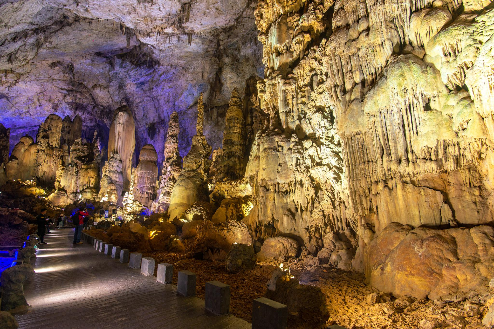
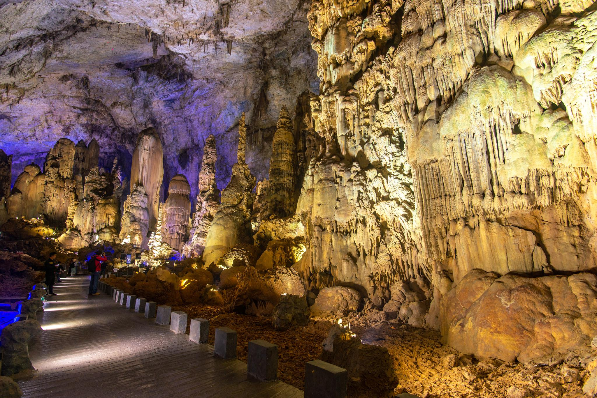
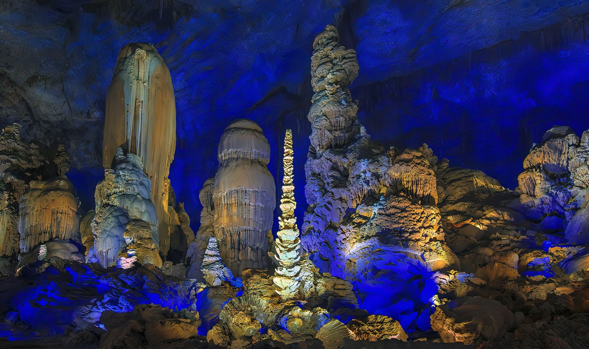
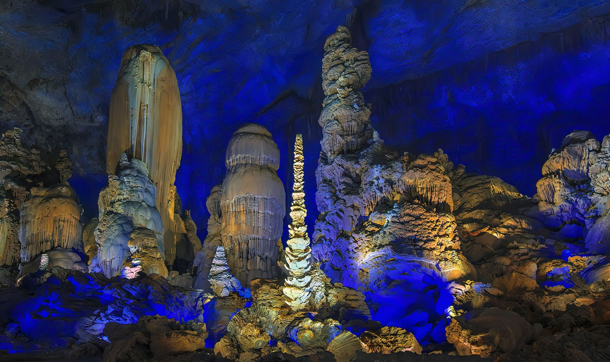

关于织金洞
织金洞，被誉为“岩溶瑰宝”、“溶洞奇观”。洞内空间宏大，形态各异的钟乳石、石笋、石柱，构成壮丽的地下世界。必看：“银雨树”、“霸王盔”。
Zhijin Cave, acclaimed as a "karst treasure" and "cave wonder." Vast inner space with stalactites, stalagmites, and stone pillars of various forms, creating a magnificent underworld. Must-sees: "Silver Rain Tree," "Overlord's Helmet."
Grotte de Zhijin, acclamée comme un « trésor karstique » et une « merveille des grottes ». Vaste espace intérieur avec des stalactites, stalagmites et piliers de pierre de formes variées, créant un monde souterrain magnifique. À voir absolument : « Arbre de Pluie d'Argent », « Casque du Suzerain ».
 


 

主要特色
- 银雨树：高17米的透明石笋，镇洞之宝。
- 霸王盔：形态奇特的巨大石笋。
- 倒挂琵琶：形象逼真的石幔。
- 地下塔林：众多的石笋构成奇特的塔林景观。
游玩小贴士
建议游玩时间3-4小时。洞内全程步行约需2-3小时，台阶较多，请穿着舒适的鞋子。洞内恒温，约16℃。